How to use PCDCT Data Tool¶
该教程用于帮助用户理解如何使用PCDCT Data Tool。
请点击此处获取PCDCT Data Tool压缩包。
1. Python解释器安装¶
在下面的链接中找到python的安装包: \172.24.236.30\srdc\Large_Chiller\18-MBD(ZXJ)\MBD

下载成功后，双击安装程序，开始安装。(需与IT联系获取admin权限)
注意安装到这一步的时候，一定要勾选 Add Python 3.7 to path 选项， 然后再点击 Customize installation 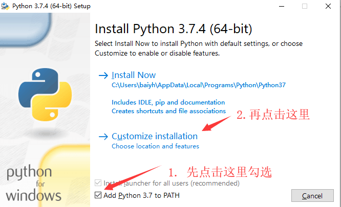
在下图这一步时，点击 Next 即可 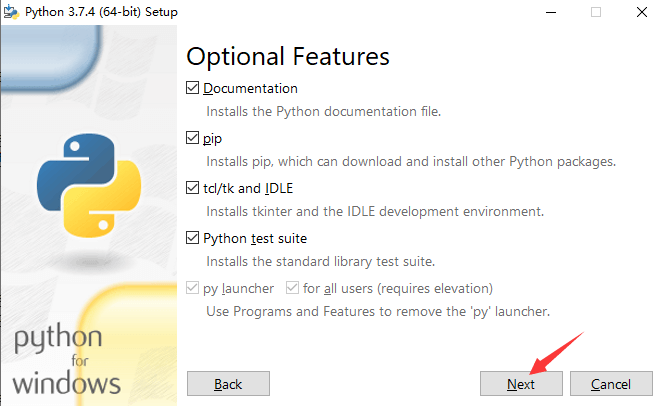
在下图这一步时，按图示步骤操作。随后，等待安装完成。 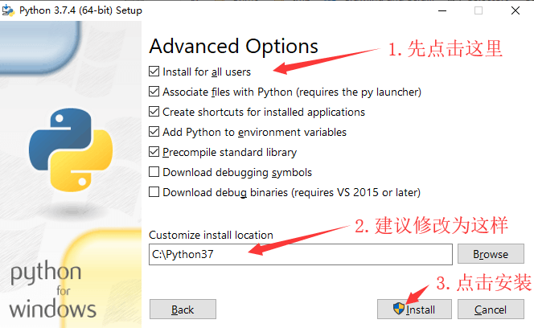
3. 命令行运行PCDCT数据处理工具¶
打开命令行窗口。 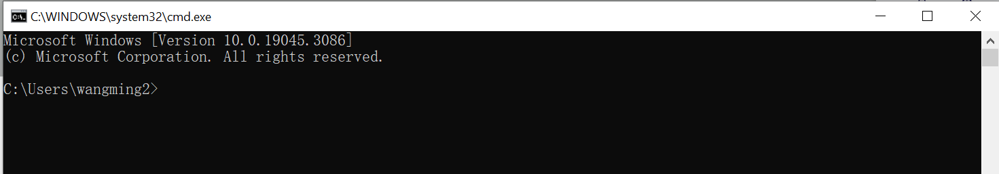
进入代码文件所在目录。 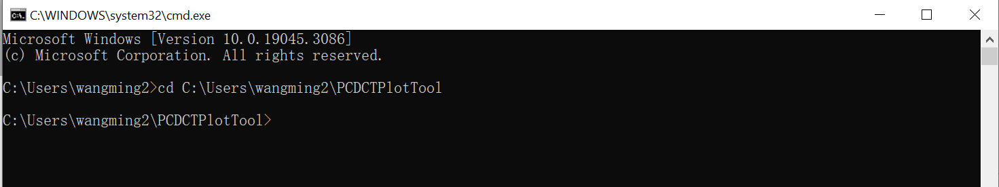
使用
pip install安装依赖库pandas，datetime and plotly。pip install pandas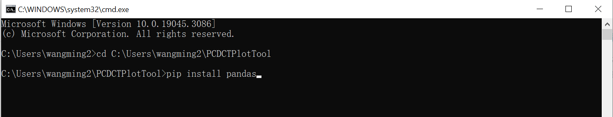pip install datetime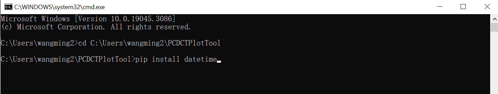pip install plotly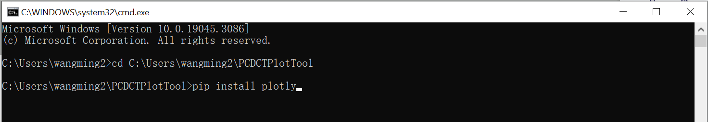将需要绘制的数据以.csv的格式存放在LabData文件夹里。 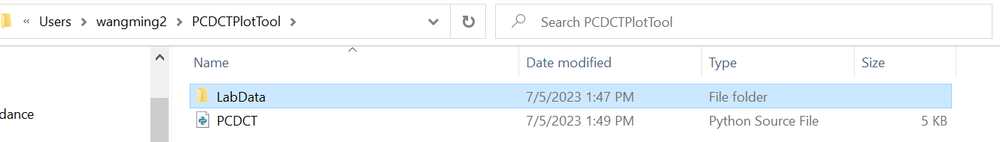
打开PCDCT.py文件，在第9行中，将数据文件名更改为需要绘制的文件名(不用加.csv后缀) 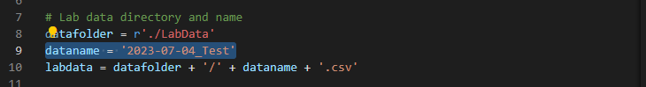
在命令行里面敲入命令
python PCDCT.py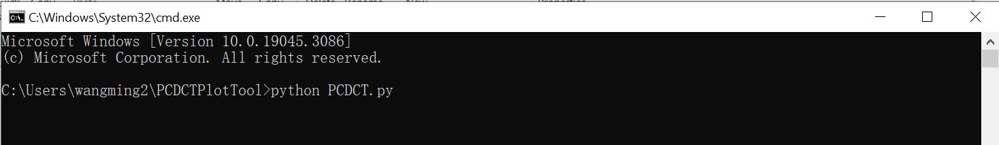
4. 安装VScode¶
在下面的链接中找到vscode的安装包: \172.24.236.30\srdc\Large_Chiller\18-MBD(ZXJ)\MBD
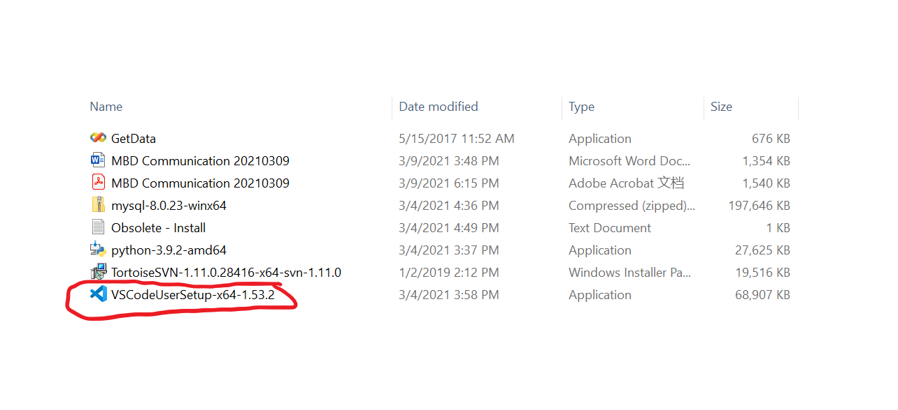双击下载后的可执行文件，安装。
勾选同意，点击下一步。 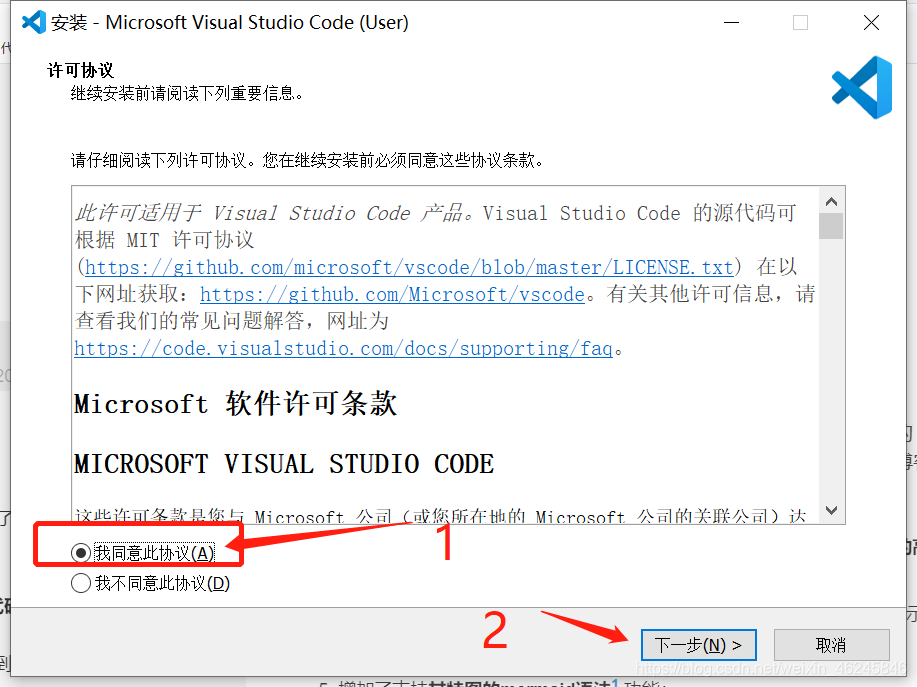
选择安装位置。然后点击下一步。 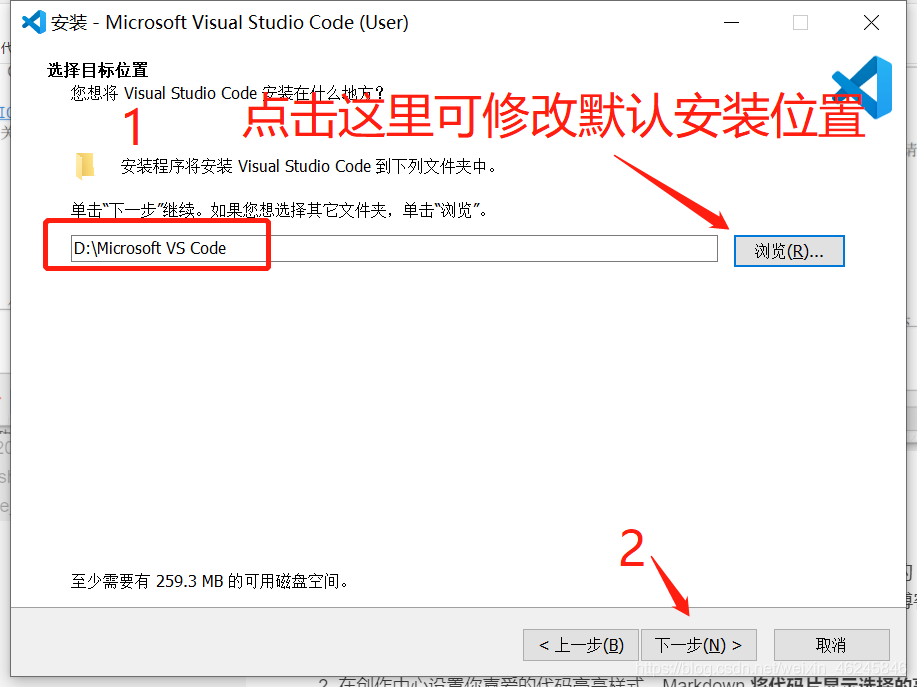
点击下一步(不创建开始菜单可以不勾选) 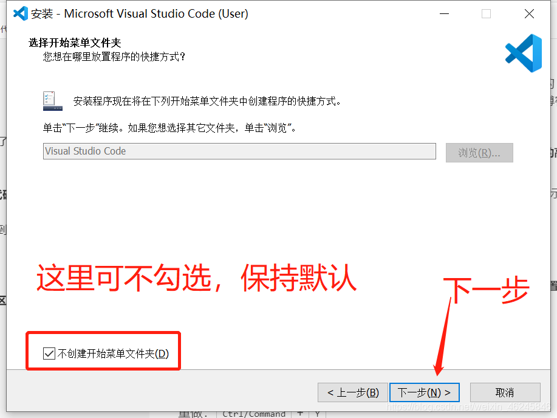
勾选创建快捷方式，点击下一步。 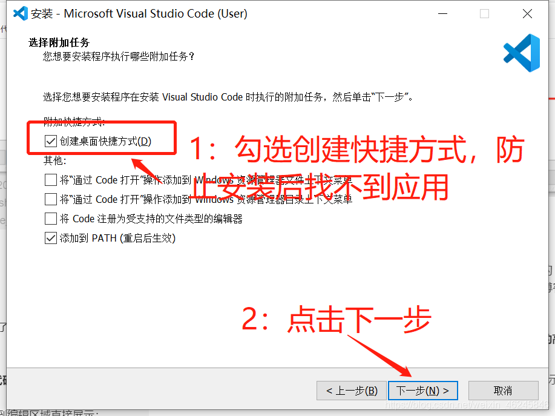
点击安装，开始安装。 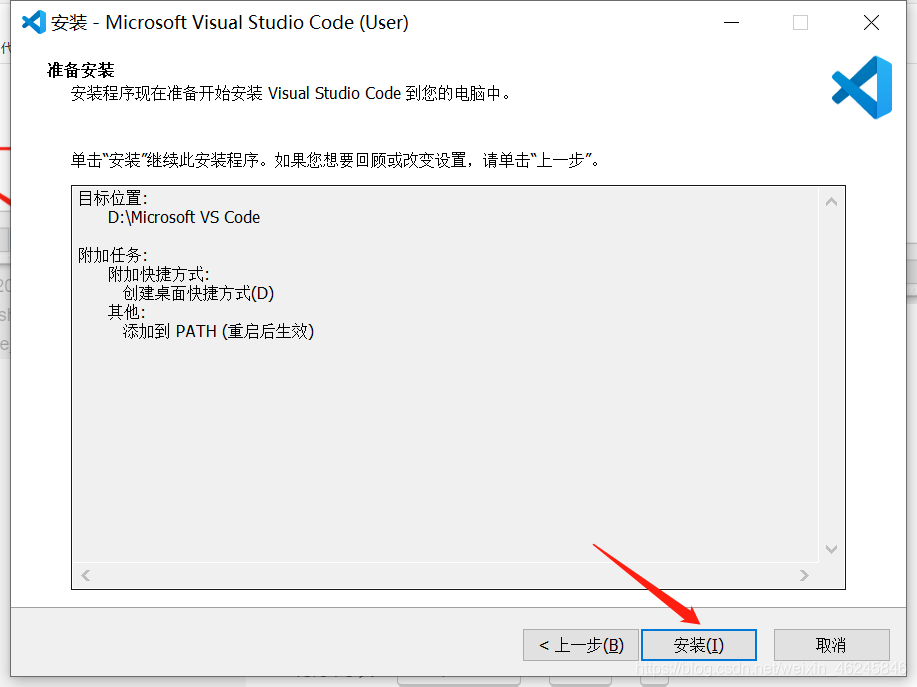
等待安装结束。 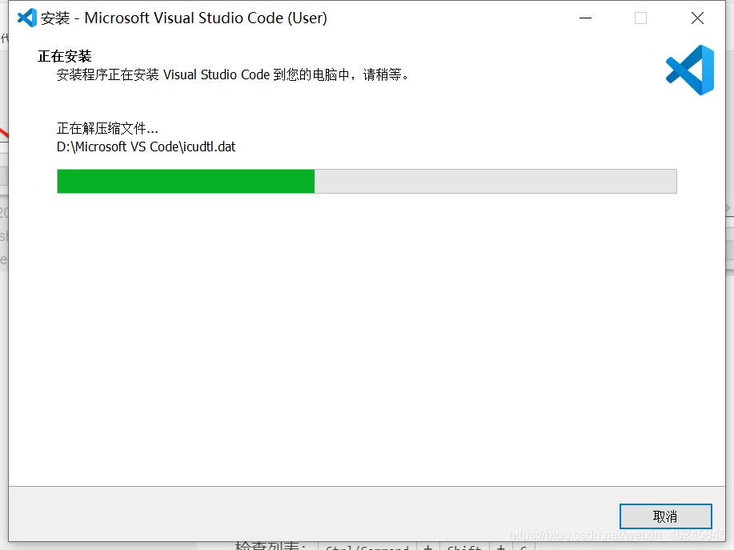
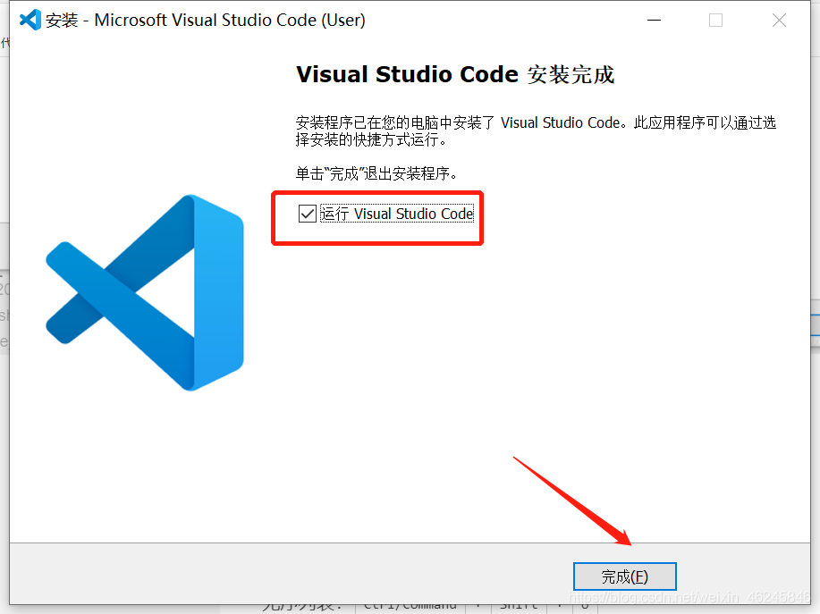
5. 使用VScode运行PCDCT数据处理工具¶
1.在 文件 选项下，选择将文件夹添加到工作区
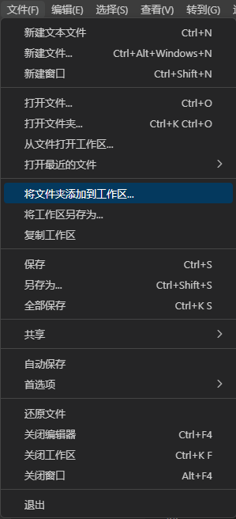
2.在 终端 选项下， 选择新建终端。
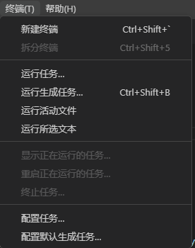
3.在终端中使用pip install 安装依赖库pandas，datetime and plotly。
pip install pandas
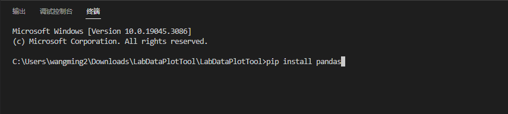
pip install datetime
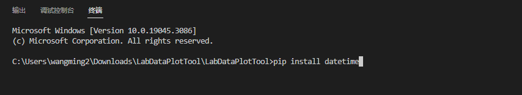
pip install plotly
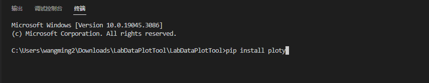
4.将需要绘制的数据以.csv的格式存放在LabData文件夹里。
5.打开PCDCT.py文件，在第9行中，将数据文件名更改为需要绘制的文件名(不用加.csv后缀)
6.点击运行python文件。
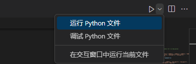